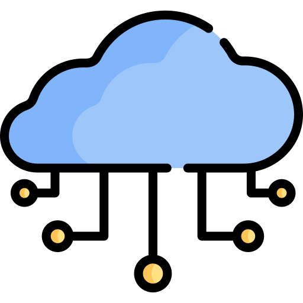

Introducción a IoT
En pocas palabras, el internet de las cosas (IOT) está compuesto por cualquier cosa u objeto que tenga la capacidad de conectarse a internet, sea por vía inalámbrica (WI-FI) o alámbrica (ETHERNET) para recibir o enviar datos relevantes, desde vehículos automatizados o sensores de temperatura, hasta equipos de cómputo completo o Smartphones.
Vamos Aprender
Fundamentos de Electrónica Básica
El módulo de "Fundamentos de Electrónica Básica" busca desentrañar los misterios detrás de los circuitos, componentes y señales que son la base de estos dispositivos. Aquí, emprenderemos un viaje desde entender las partículas más diminutas responsables del flujo de corriente, hasta la creación de circuitos que pueden realizar tareas específicas.
Vamos Aprender
Presentación de la plataforma gratuita Arduino Iot cloud
Las plataformas de IoT son el punto de arranque para lograr la interconexión entre todos nuestros dispositivos electrónicos o inteligentes. De cierta forma, permiten la creación de entornos digitales, capaces de interactuar con grandes cantidades de datos.
Vamos Aprender
La Tríada del IoT: Explorando las Tres Grandes Dimensiones del Internet de las Cosas
Podemos dividir el HW IoT en tres grandes conjuntos:
- Dispositivos o Nodos IoT
.png)
- Gateway o Pasarela IoT
.png)
- Infraestructura en la Nube o Plataforma IoT 

Aplicaciones
El Internet de las cosas (IoT) es una revolucionaria tecnología que ha transformado la forma en que interactuamos con el mundo digital y físico. Al conectar dispositivos, sensores y objetos cotidianos a internet, IoT ha abierto un vasto universo de posibilidades y aplicaciones. Desde el monitoreo inteligente de hogares y ciudades hasta la optimización de procesos industriales, el IoT ha impulsado la eficiencia, la comodidad y la seguridad en diversos campos.
Vamos Aprender